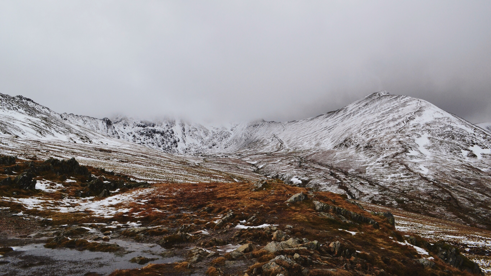

<!DOCTYPE html>
<html>
<head>
<meta charset="utf-8">
<title>temp</title>
<meta name="description" content="temp">
<meta name="keywords" content="temp">
<style>
.img04 {opacity: 0;}
</style>
</head>
<body>

<!-- 

 -->
<div class="img04Wrap"></div>

<script src="./libs/jquery.js"></script>
<script src="./libs/TweenMax.min.js"></script>
<script>

var gb = {};
gb.in = {};

// ------------------------------------------------------------
//
//  motion
//
// ------------------------------------------------------------
(function(){

  function Motion(src) {

    this.src = src;


  }

  Motion.prototype = {
    
    blur: function(opt){ 

      var def = {
              $target: null,
              dur: 1,
              delay: 0,
              blur: 0,blurTarget: 100,
              ease: Power3.easeIn
            };
      var param = $.extend(def,opt);
      var tl = new TimelineMax();      

      tl
        .to(param, param.dur, {
          blur: param.blurTarget,
          ease: param.ease,
          delay: param.delay,
          onUpdate: function(p) {
            var b = p.target.blur;
            TweenMax.set(param.$target, {
              '-webkit-filter': 'blur(' + b + 'px)',
              'filter': 'blur(' + b + 'px)',
            });
          },
          onUpdateParams: ["{self}"]
        })
      
    },

    bright: function(opt){

      var def = {
              $target: null,
              dur: 1,
              delay: 0,
              grayscale: 0,grayscaleTarget: 100,
              brightness: 100,brightnessTarget: 1000,
              ease: Power3.easeIn,
            };
      var param = $.extend(def,opt);
      var tl = new TimelineMax();      

      TweenMax
        .to(param, param.dur, {
          grayscale: param.grayscaleTarget,
          brightness: param.brightnessTarget,
          ease: param.ease,
          delay: param.delay,
          onUpdate: function(p) {
            var g = p.target.grayscale;
            var b = p.target.brightness;
            TweenMax.set(param.$target, {
              '-webkit-filter': 'brightness(' + b + '%) grayscale(' + g + '%)',
              'filter': 'brightness(' + b + '%) grayscale(' + g + '%)',
            });
          },
          onUpdateParams: ["{self}"]
        });


    },

    shake: function(opt){

      var def = {
              $target: null,
              dur: 1,
              delay: 0,
              mag: 10,
              ease: Power3.easeIn,
            };
      var param = $.extend(def,opt);
      var tl = new TimelineMax();      

      tl
        .to({}, param.dur, {
          delay: param.delay,
          ease: param.ease,
          onUpdate: function(){

            var x = (Math.random()*2-1) * param.mag;
            var y = (Math.random()*2-1) * param.mag;

            TweenMax.set(param.$target, {x:x,y:y});

          },
          onComplete: function(){

            TweenMax.set(param.$target, {x:0,y:0});

          },
        });

    },

    afterImg: function(opt){

      var def = {
              target: null,
              $wrap: $('body'),
              dur: 1,
              delay: 0,
              num: 3,
              lag: 0.05,
              ease: Power3.easeIn,
            };
      var param = $.extend(def,opt);
      var tl = new TimelineMax();      

      tl
        .add(function(){

          // 画像複製
          for (var i = 0; i < param.num; i++) {
            var dom = $(param.target).clone();
            param.$wrap.append(dom);
          };
          
          // 画像スタイルset
          TweenMax.set($(param.target), {'transform-origin':'50% 50%','position':'absolute',scale:1.3});

          // motion
          $(param.target).each(function(index, el) {
              
              TweenMax.to($(this), param.dur, {
                scale: 1,
                opacity: 1,
                delay: param.lag * index,
                ease: param.ease,
              });

          });

        })

    },


  }

  // 公開api
  gb.Motion = Motion;

})();


// ------------------------------------------------------------
//
//  Main
//
// ------------------------------------------------------------

$(function(){

  gb.in.m = new gb.Motion();

  // blur
  var opt = {
    $target: $('.img01'),
    dur: 3,
  }
  // gb.in.m.blur(opt);

  // brightness
  var opt = {
    $target: $('.img02'),
    grayscale: 0,grayscaleTarget: 100,
    brightness: 100,brightnessTarget: 10000,
    dur: 3,
    ease: Power3.easeIn,
  }
  // gb.in.m.bright(opt);

  // shake
  var opt = {
    $target: $('.img03'),
    mag: 10,
    dur: 3,
    delay: 1,
    ease: Power3.easeIn,
  }
  // gb.in.m.shake(opt);

  // afterImg
  var opt = {
    target: '.img04',
    $wrap: $('.img04Wrap'),
    dur: 1.2,
    num: 2,
    lag: 0.18,
    delay: 1,
    ease: Power3.easeOut,
  }
  gb.in.m.afterImg(opt);


})

</script>
</body>
</html>